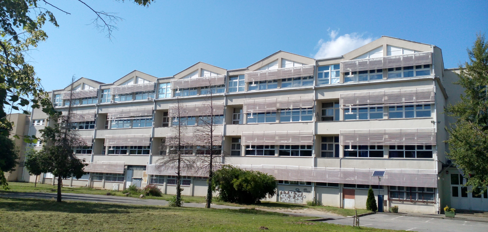
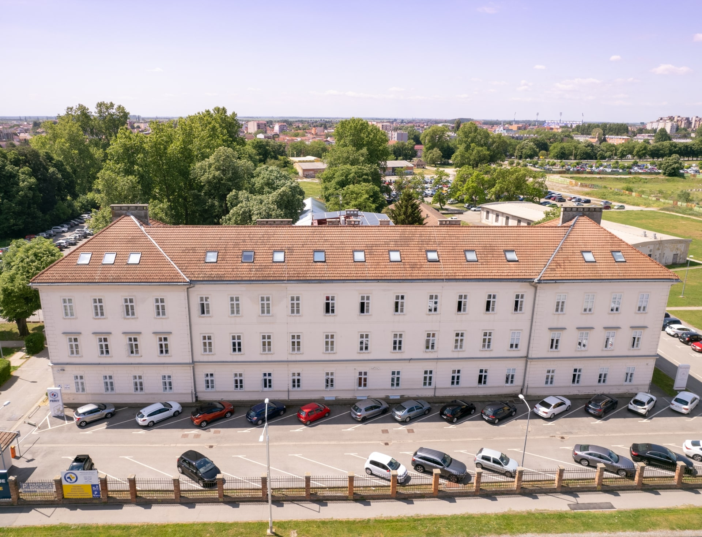
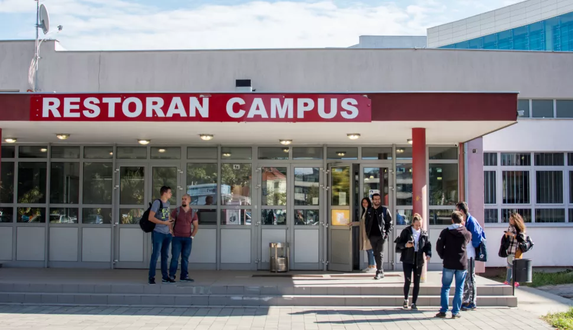

Povijest FERIT-a
Godine 1978. u Osijeku je počeo djelovati Studij elektrostrojarstva, kao interfakultetski studij za obrazovanje kadrova elektrostrojarskog usmjerenja više stručne spreme.Zbog nedostatka prostora, nastava se u prvoj akademskoj godini odvijala na više mjesta u gradu: u Društvenom domu OLT-a, Elektroslavoniji te u prostorijama Pravnog fakulteta. Kasnije je studij preselio u prostore Elektrometalskog školskog centra i nabavio vlastitu laboratorijsku opremu, a početkom 1981. postao je dijelom Elektrometalskog školskog centra kao osnovna organizacija udruženog rada. Iste godine postao je samostalnom visokoškolskom ustanovom.
Godine 1987. Studij je, unatoč materijalnim i statusnim poteškoćama, upisan u registar znanstveno-istraživačkih organizacija, a sljedeće je godine preimenovan u Studij elektrotehnike. Pod novim je imenom pokrenut i nov program obrazovanja inženjera elektrotehnike i elektronike, a istodobno je napušten stari program elektrostrojarstva. S obzirom na veći broj novozaposlenih profesora i asistenata, kao i na hrvatski zajednički nastavni plan i program obrazovanja inženjera elektrotehnike, započele su pripreme za prerastanje studija u fakultet.
Godine 2003. završena je izrada novih nastavnih planova i programa za sveučilišne i stručne studije, koji obuhvaćaju sva područja elektrotehnike i računarstva. Akademske godine 2004./05. nastavni planovi i programi usklađeni su s Bolonjskom deklaracijom, koja se počela primjenjivati od akademske godine 2005./06. Godine 2006. fakultet je od Sveučilišta na korištenje dobio zgradu u sveučilišnom kampusu, čije je uređenje dovršeno 2009., pa se nastava od tada, osim u glavnoj zgradi u Trpimirovoj, održava i ondje. Dana 8. ožujka 2016. na sjednici Senata Sveučilišta Josipa Jurja Strossmayera u Osijeku prihvaćena je promjena imena u Fakultet elektrotehnike, računarstva i informacijskih tehnologija.



Popis smjerova
| Vrsta | Trajanje | Broj ects-a |
|---|---|---|
| Stručni prijediplomski studij | Šest semestara | 180 |
| Sveučilišni prijediplomski studij | Šest semestara | 180 |
| Sveučilišni diplomski studij | Četiri semestara | 120 |
Zanimljivost!
Zlatna medalja za FERIT-ovca Mateja Hegeduša na međunarodnoj izložbi inovacija ARCA